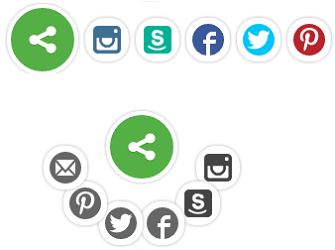
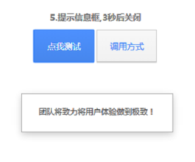
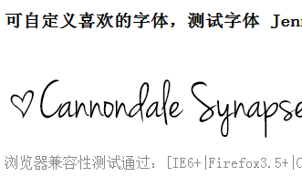
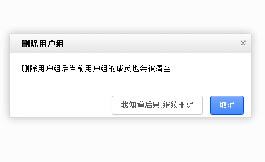

JavaScript
包含了常见的 动画、按钮、表单、图像滤镜、导航、进度条、选项卡、轮播图、弹出层、上传、验证、tips提示、翻页等jQuery插件。插件是资源独立的，组件在系统内可复用。
-

classysocial 分享插件
ClassySocial是一个社交分享按钮。它不是简单的显示一组按钮，而是当用户点击后动画它们到特定位置。
-

TIPS 消息提示插件
TIPS插件,用于简单操作信息提醒。具体调用方式，请查看API。
-

font-face 自定义字体
使我们能够以一种可访问的，可操作和易扩展的方式在网页上使用自定义的字体，浏览器兼容性良好。
-

可定制高级弹出提醒框
ZTEsoft UED团队前端成员在维护的弹出对话框项目.目前版本已经稳定.
-

3DEffectMobileShowcase
3D状态展示移动应用程序，展示不同界面的内容。
-
CSS3 Loading动画
3D状态展示移动应用程序，展示不同界面的内容。